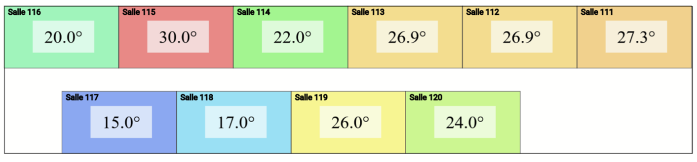
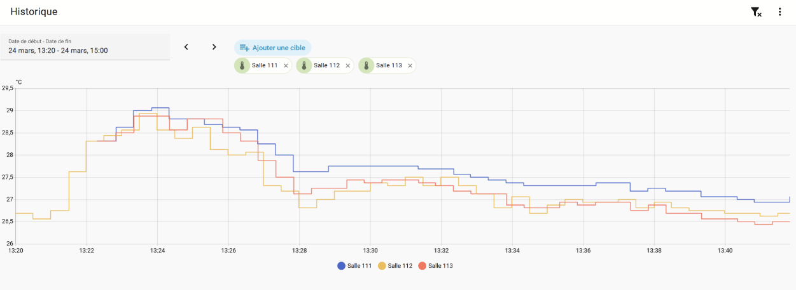

Régulation thermique, supervision de mesures de températures

Figure 1 : Affichage des température dans chaque salle d'un batiment

Figure 2 : Evolution de la température dans une salle
Problématique
Les locaux d’une surface importante, comme ceux de l’École Centrale de Lyon, sont particulièrement soumis aux problèmes de régulation thermique faute de pouvoir faire des relevés de température voire d’hygrométrie en de multiples points. On retrouve cette problématique dans les locaux industriels, les locaux informatiques, et évidemment dans une moindre mesure chez les particuliers. Ces mesures sont importantes pour plusieurs raisons : la qualité de vie, la sécurité des matériels ou des denrées, la limitation de la consommation d'énergie, mais aussi pour la détection de problèmes (chauffage/clim en panne, fuites etc.)
Il s’agit de mettre en place un système de surveillance des températures (voire de l’hygrométrie) dans les locaux de l’École, en particulier les locaux sensibles (salles climatisées, locaux informatiques, etc.), les locaux standards (bureaux, salles de cours, etc.) et sur le système de chauffage.
La solution envisagée pour collecter des données (température/hygrométrie) est d’utiliser des capteurs simples (1wire DS18B20) couplés à des rapsberry PI, de façon à pouvoir multiplier les points de mesures sans faire exploser les coûts, et assurer une surveillance et une supervision en déterminant les situations de fonctionnement normal et anormal (reporting, affichage graphique, alertes, etc.) par le biais d’outils interactifs (web, applis portables, etc.). Un PE a permis de débroussailler la problématique, sans arriver à un outil fonctionnel.
Présentation du projet
Grâce à Home Assistant et à son module Floor Plan, nous avons pu mettre en place un système automatisé de relevé de température, accompagné d’une visualisation spatiale des données (Figure 1), ainsi que d’un suivi temporel (Figure 2). Home Assistant permet par ailleurs de déployer facilement cette solution sur n’importe quel serveur. Nous avons choisi de le déployer sur rasberry pi pour plus de facilité d'utilisation
Dans ce projet, nous avons choisi d’utiliser deux types de capteurs :
- Des capteurs filaires, directement reliés au système
- Des capteurs sans fil, utilisant des modules ESP32 pour la communication
Les autres pages de ce tutoriel détaillent les différentes étapes de mise en œuvre du projet :
- Prérequis (requirements)
- Déploiement de Home Assistant sur un serveur
- Configuration du Raspberry Pi et de la communication
- Création des plans
- Paramétrage des capteurs
À noter que chaque composant de la solution est indépendant et peut être remplacé par des alternatives, notamment en ce qui concerne les capteurs.